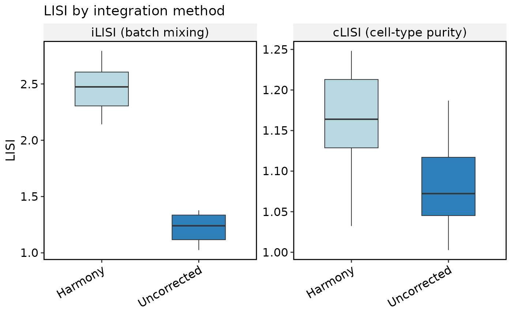
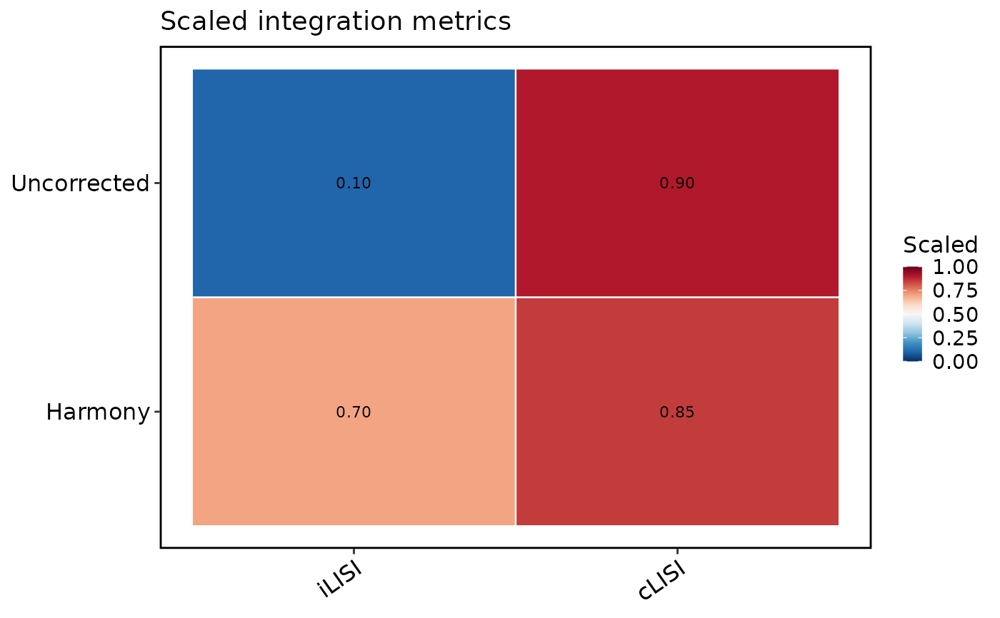
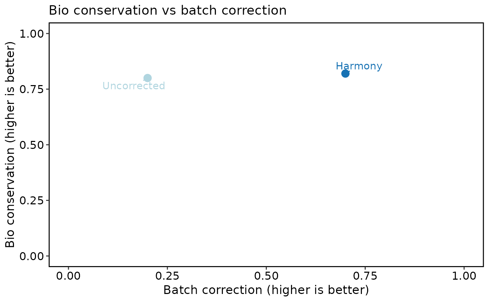

Visualize a Seurat object returned by RunIntegrationBenchmark().
"box" compares per-cell LISI scores across methods, "heatmap" shows
scaled summary metrics, "scatter" plots the bio-vs-batch trade-off, and
"umap" draws batch and cell-type embeddings. "auto" returns all of these
plots.
Usage
IntegrationBenchmarkPlot(
srt,
plot_type = c("auto", "box", "heatmap", "scatter", "umap"),
tool_name = "IntegrationBenchmark",
metrics = NULL,
palette = "Chinese",
palcolor = NULL,
theme_use = "theme_scop",
theme_args = list(),
pt.size = NULL,
pt.alpha = 1,
boxplot_jitter = FALSE,
combine = TRUE,
nrow = NULL,
ncol = NULL,
verbose = TRUE,
...
)Arguments
- srt
A
Seuratobject fromRunIntegrationBenchmark()."box"can also plot any metadata columns ending in"_LISI".- plot_type
Plot type, or
"auto"for a named list of all views.- tool_name
srt@toolsentry created byRunIntegrationBenchmark().- metrics
Optional metric names used in the heatmap.
- palette, palcolor
Palette name (thisplot::show_palettes) or custom colors.
- theme_use, theme_args
Theme name or function, plus extra theme arguments.
- pt.size, pt.alpha
Point size and transparency.
pt.size = NULLscales withsqrt(n)(minimum0.3). Rasterized points keep at least a two-pixel radius atraster.dpi = c(512, 512)and scale withraster.dpi.- boxplot_jitter
Whether to overlay jittered points on the LISI boxes.
- verbose
Whether to print the message. Default is
TRUE.- ...
The message to print.
Examples
srt <- SeuratObject::CreateSeuratObject(
counts = Matrix::Matrix(
matrix(1:20, nrow = 2, dimnames = list(c("g1", "g2"), paste0("c", 1:10))),
sparse = TRUE
)
)
set.seed(1)
srt$Uncorrected_tech_LISI <- stats::runif(10, 1.0, 1.4)
srt$Harmony_tech_LISI <- stats::runif(10, 2.0, 2.8)
srt$Uncorrected_celltype_LISI <- stats::runif(10, 1.0, 1.2)
srt$Harmony_celltype_LISI <- stats::runif(10, 1.0, 1.3)
srt@tools$IntegrationBenchmark <- list(
summary = data.frame(
method = c("Uncorrected", "Harmony"),
bio = c(0.80, 0.82),
batch = c(0.20, 0.70),
overall = c(0.56, 0.77),
status = "success",
stringsAsFactors = FALSE
),
metrics = data.frame(
method = rep(c("Uncorrected", "Harmony"), each = 2),
metric = rep(c("iLISI", "cLISI"), 2),
category = rep(c("batch", "bio"), 2),
value = c(1.2, 1.1, 2.4, 1.2),
scaled = c(0.1, 0.9, 0.7, 0.85),
direction = "higher",
stringsAsFactors = FALSE
),
runs = data.frame(
method = c("Uncorrected", "Harmony"),
status = "success",
umap = NA_character_,
stringsAsFactors = FALSE
),
batch = "tech",
celltype = "celltype"
)
thisplot::print_colored_table(
srt@tools$IntegrationBenchmark$summary,
by = "row",
palette = "Chinese"
)
#> method bio batch overall status
#> Uncorrected 0.80 0.2 0.56 success
#> Harmony 0.82 0.7 0.77 success
IntegrationBenchmarkPlot(srt, plot_type = "box")

IntegrationBenchmarkPlot(srt, plot_type = "heatmap")

IntegrationBenchmarkPlot(srt, plot_type = "scatter")
